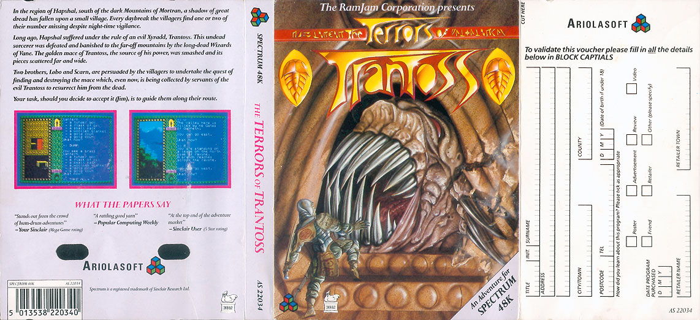

The Terrors of Trantoss
Research in progress. The Terrors of Trantoss appeared in 1986 under the Ariolasoft label. The catalogue credits RamJam Corp. Known catalogue formats: Amstrad CPC. This holding page will be expanded as contemporary material and first-hand recollections are reviewed.